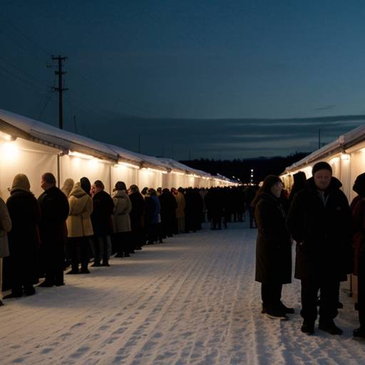
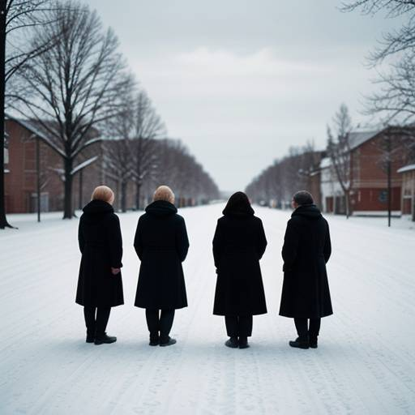

Tietoa meistä
Ruokapankki on voittoa tavoittelematon hyväntekeväisyysjärjestö, joka tarjoaa ruoka-apua ja tukea vähävaraisille ja apua tarvitseville. Toimintamme perustuu lahjoituksiin ja vapaaehtoistyöhön.
Tavoitteenamme on vähentää nälkää ja ruokahävikkiä yhteiskunnassamme sekä edistää sosiaalista oikeudenmukaisuutta.


Seuraa meitä Facebookissa
Palvelumme
- Ruokajakelut: Järjestämme säännöllisiä ruokajakeluja eri puolilla kaupunkia.
- Ruokakassit: Tarjoamme valmiiksi pakattuja ruokakasseja tarvitseville perheille.
- Lämmin ateria: Tarjoamme lämpimän aterian päivittäin ruokalassamme.
- Neuvonta: Annamme ohjausta ja neuvontaa muiden tukipalveluiden piiriin.
Palvelumme ovat maksuttomia ja tarkoitettu kaikille apua tarvitseville.
Auta meitä auttamaan
Voit tukea toimintaamme monin tavoin:
- Lahjoita ruokaa: Otamme vastaan säilyviä elintarvikkeita.
- Lahjoita rahaa: Pienikin summa auttaa meitä jatkamaan työtämme.
- Vapaaehtoistyö: Tule mukaan vapaaehtoiseksi ruokajakeluun tai muihin tehtäviin.
- Yritysyhteistyö: Yrityksesi voi tukea toimintaamme monin tavoin.
Yhteystiedot
Osoite: Yliopistonkati 15, 40100 Jyväskylä
Puhelin: 040 5363154
Sähköposti: ruokapankki@gmail.com
Aukioloajat:
- Ma, Ti, To, Pe: 9:00-14:00
- Ke, La, Su: Suljettu